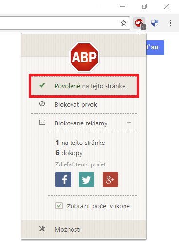

Ešte predtým ako začnete čítať
Táto sekcia obsahuje užitočné informácie, ktoré nemusia byť potrebné okamžite. Na túto stránku sa môžete
vrátiť kliknutím na ikonku modrého štítu v
v pravom hornom rohu.
Dočastné vypnutie Adblocku
Ak sá vás stránka snaží upozorniť na to, že máte zapnutý Adblock a žiada o vypnutie, tak ho poslúchnite.
Aj stránky musia zarábať.
Postup:
- Kliknite na iknou doplnku Adblock v pravom hornom rohu
- Kliknite na tlačítko
"Povolené na tejto stránke"

Vytvorenie záložky
Je ťažké si zapamätať všetky vaše obľúbené stránky. Preto je dôležité, aby ste vedeli ako uložiť stránky
a kde ich nájsť.
Postup:
- Kliknite na hviezdičku v pravej časti vyhľadávacieho poľa v pravom hornom rohu
- Vyberte priečinok
"Panel záložiek"
- Doporučujeme vybrať panel záložiek
Tipy
- Nikdy nehovor nikomu svoje heslo.
- Nikdy nezverejňuj svoje osobné údaje.
- Nikdy neposielaj fotky cudzím ľuďom.
- Nikdy nesťahuj súbory z internetu z neoverených zdrojov.
- Nikdy neukladaj svoje heslá.
- Never lákavým ponukám.
- Never ľudom, ktorých nepoznáš.
- Dávaj si pozor, kto je na druhej strane.
Vypnutie prehliadača
Ak ste skončili s prácou na internete, tak poslednou vašou činnosťou bude ukončenie programu.
Postup:
- Kliknite na červené X v pravom hornom rohu